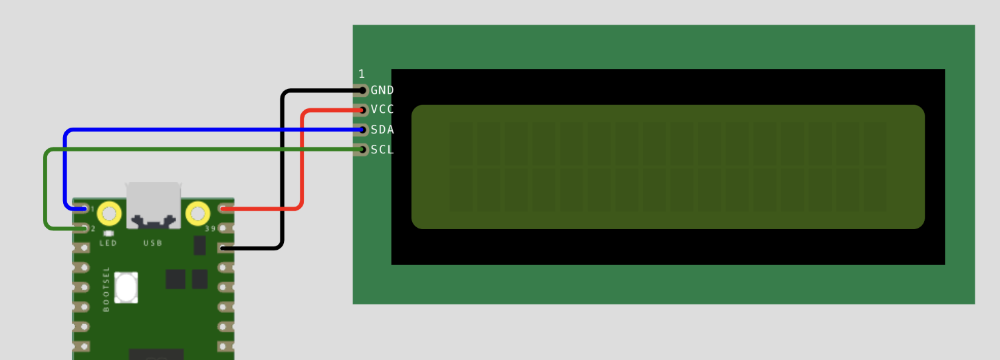

Chapter 9. I2C LCD ?붿뒪?뚮젅??臾몄옄??異쒕젰
而댄벂??紐⑤땲???놁씠??蹂대뱶???꾩옱 ?곹깭???쇱꽌 ?곗씠??媛믪쓣 ?쒓컖?곸쑝濡?肉뚮젮以????덈뒗 I2C 洹쒓꺽??LCD1602 紐⑤뱢???듭젣??遊낅땲??

?룸㈃??遺李⑸맂 寃???I2C 諛깊뙥 紐⑤뱢 ?뺣텇????4媛?μ쓽 ?좊쭔?쇰줈 ?붾㈃ ?쒖뼱媛 媛?ν빀?덈떎.
LCD I2C 諛깊뙥: VCC??V3, SDA?묰P8(8踰??), SCL?묰P9(9踰??), GND?묰ND. I2C 踰꾩뒪 ?뺣텇??4媛?λ쭔?쇰줈 16횞2 LCD ?꾩껜瑜??쒖뼱?⑸땲??
9.1 ?ъ쟾 以鍮? 援щ룞 ?쇱씠釉뚮윭由??뚯씪 ?낅줈??(留ㅼ슦 以묒슂)
LCD瑜??뚯씠??肄붾뱶濡??쎄쾶 ?쒖뼱?섎젮硫? ???멸퀎 留덉씠?щ줈?뚯씠??媛쒕컻?먮뱾???쒖??쇰줈 ?ъ슜?섎뒗 ?ㅽ뵂?뚯뒪 ?쇱씠釉뚮윭由??뚯씪 2媛?/strong>媛 Pico 蹂대뱶 ?대???誘몃━ ??λ릺???덉뼱???⑸땲?? ?꾨옒 ??肄붾뱶瑜?媛곴컖 蹂듭궗?섏뿬 Thonny?먯꽌 ???뚯씪濡?留뚮뱺 ?? 吏?뺣맂 ?대쫫?쇰줈 ??ν빐 二쇱꽭??
泥?踰덉㎏ ?뚯씪: 怨듯넻 堉덈? ??븷???섎뒗 ?뚯씪?낅땲?? ?꾨옒 肄붾뱶瑜?lcd_api.py ?대쫫?쇰줈 ??ν븯?몄슂.
import time
class LcdApi:
LCD_CLR = 0x01
LCD_HOME = 0x02
LCD_ENTRY_MODE = 0x04
LCD_DISPLAY_CONTROL = 0x08
LCD_CURSOR_SHIFT = 0x10
LCD_FUNCTION_SET = 0x20
LCD_SET_CGRAM_ADDR = 0x40
LCD_SET_DDRAM_ADDR = 0x80
LCD_BLINK_ON = 0x01
LCD_BLINK_OFF = 0x00
LCD_CURSOR_ON = 0x02
LCD_CURSOR_OFF = 0x00
LCD_DISPLAY_ON = 0x04
LCD_DISPLAY_OFF = 0x00
LCD_ENTRY_RIGHT = 0x00
LCD_ENTRY_LEFT = 0x02
LCD_ENTRY_SHIFT_INCREMENT = 0x01
LCD_ENTRY_SHIFT_DECREMENT = 0x00
LCD_MOVE_RIGHT = 0x04
LCD_MOVE_LEFT = 0x00
LCD_8BIT_MODE = 0x10
LCD_4BIT_MODE = 0x00
LCD_2LINE_MODE = 0x08
LCD_1LINE_MODE = 0x00
LCD_5X10_DOTS = 0x04
LCD_5X8_DOTS = 0x00
# I2cLcd媛 李얜뒗 由ъ뀑 鍮꾪듃 ?ㅼ젙??
LCD_FUNCTION_RESET = 0x30
def __init__(self, num_lines, num_columns):
self.num_lines = num_lines
if self.num_lines > 4:
self.num_lines = 4
self.num_columns = num_columns
if self.num_columns > 40:
self.num_columns = 40
self.cursor_x = 0
self.cursor_y = 0
self.implied_newline = False
self.backlight = True
self.display_control = self.LCD_DISPLAY_ON | self.LCD_CURSOR_OFF | self.LCD_BLINK_OFF
self.display_function = self.LCD_4BIT_MODE | self.LCD_1LINE_MODE | self.LCD_5X8_DOTS
if self.num_lines > 1:
self.display_function |= self.LCD_2LINE_MODE
def clear(self):
self.hal_write_command(self.LCD_CLR)
self.hal_write_command(self.LCD_HOME)
self.cursor_x = 0
self.cursor_y = 0
time.sleep_ms(2)
def show_cursor(self):
self.display_control |= self.LCD_CURSOR_ON
self.hal_write_command(self.display_control)
def hide_cursor(self):
self.display_control &= ~self.LCD_CURSOR_ON
self.hal_write_command(self.display_control)
def blink_cursor_on(self):
self.display_control |= self.LCD_BLINK_ON
self.hal_write_command(self.display_control)
def blink_cursor_off(self):
self.display_control &= ~self.LCD_BLINK_ON
self.hal_write_command(self.display_control)
def display_on(self):
self.display_control |= self.LCD_DISPLAY_ON
self.hal_write_command(self.display_control)
def display_off(self):
self.display_control &= ~self.LCD_DISPLAY_ON
self.hal_write_command(self.display_control)
def backlight_on(self):
self.backlight = True
self.hal_backlight_on()
def backlight_off(self):
self.backlight = False
self.hal_backlight_off()
def move_to(self, cursor_x, cursor_y):
self.cursor_x = cursor_x
self.cursor_y = cursor_y
if cursor_x >= self.num_columns:
cursor_x = self.num_columns - 1
elif cursor_x < 0:
cursor_x = 0
if cursor_y >= self.num_lines:
cursor_y = self.num_lines - 1
elif cursor_y < 0:
cursor_y = 0
addr = cursor_x
if cursor_y == 1:
addr += 0x40
elif cursor_y == 2:
addr += self.num_columns
elif cursor_y == 3:
addr += 0x40 + self.num_columns
self.hal_write_command(self.LCD_SET_DDRAM_ADDR | addr)
def putstr(self, string):
for char in string:
if char == '\n':
self.cursor_x = 0
self.cursor_y += 1
if self.cursor_y >= self.num_lines:
self.cursor_y = 0
self.move_to(self.cursor_x, self.cursor_y)
else:
self.hal_write_data(ord(char))
self.cursor_x += 1
if self.cursor_x >= self.num_columns:
self.cursor_x = 0
self.cursor_y += 1
if self.cursor_y >= self.num_lines:
self.cursor_y = 0
self.move_to(self.cursor_x, self.cursor_y)
def custom_char(self, location, charmap):
if location < 0 or location > 7:
return
self.hal_write_command(self.LCD_SET_CGRAM_ADDR | (location << 3))
for i in range(8):
self.hal_write_data(charmap[i])
self.move_to(self.cursor_x, self.cursor_y)
def hal_write_command(self, cmd):
raise NotImplementedError
def hal_write_data(self, data):
raise NotImplementedError
def hal_backlight_on(self):
raise NotImplementedError
def hal_backlight_off(self):
raise NotImplementedError
??踰덉㎏ ?뚯씪: I2C ?듭떊 洹쒓꺽???ㅻ（???뚯씪?낅땲?? ?꾨옒 肄붾뱶瑜?pico_i2c_lcd.py ?대쫫?쇰줈 ??ν븯?몄슂.
import time
from machine import I2C
from lcd_api import LcdApi
class I2cLcd(LcdApi):
MASK_RS = 0x01
MASK_RW = 0x02
MASK_E = 0x04
SHIFT_BACKLIGHT = 3
SHIFT_DATA = 4
def __init__(self, i2c, i2c_addr, num_lines, num_columns):
self.i2c = i2c
self.i2c_addr = i2c_addr
self.i2c.writeto(self.i2c_addr, bytes([0]))
time.sleep_ms(20)
# ?먮윭 諛쒖깮 吏???듦낵瑜??꾪븳 珥덇린???꾨줈?좎퐳
self.hal_write_init_nibble(self.LCD_FUNCTION_RESET)
time.sleep_ms(5)
self.hal_write_init_nibble(self.LCD_FUNCTION_RESET)
time.sleep_ms(1)
self.hal_write_init_nibble(self.LCD_FUNCTION_RESET)
self.hal_write_init_nibble(0x20)
super().__init__(num_lines, num_columns)
cmd = self.LCD_FUNCTION_SET | self.LCD_4BIT_MODE | self.LCD_2LINE_MODE | self.LCD_5X8_DOTS
self.hal_write_command(cmd)
cmd = self.LCD_DISPLAY_CONTROL | self.LCD_DISPLAY_ON | self.LCD_CURSOR_OFF | self.LCD_BLINK_OFF
self.hal_write_command(cmd)
self.clear()
cmd = self.LCD_ENTRY_MODE | self.LCD_ENTRY_LEFT
self.hal_write_command(cmd)
def hal_write_init_nibble(self, nibble):
byte = ((nibble >> 4) << self.SHIFT_DATA) | (1 << self.SHIFT_BACKLIGHT)
self.i2c.writeto(self.i2c_addr, bytes([byte | self.MASK_E]))
self.i2c.writeto(self.i2c_addr, bytes([byte]))
def hal_write_command(self, cmd):
self.hal_write_nested(cmd, 0)
def hal_write_data(self, data):
self.hal_write_nested(data, self.MASK_RS)
def hal_write_nested(self, value, mode):
backlight = (1 if self.backlight else 0) << self.SHIFT_BACKLIGHT
# High nibble
high = ((value & 0xF0) >> 4) << self.SHIFT_DATA
self.i2c.writeto(self.i2c_addr, bytes([high | mode | backlight | self.MASK_E]))
self.i2c.writeto(self.i2c_addr, bytes([high | mode | backlight]))
# Low nibble
low = (value & 0x0F) << self.SHIFT_DATA
self.i2c.writeto(self.i2c_addr, bytes([low | mode | backlight | self.MASK_E]))
self.i2c.writeto(self.i2c_addr, bytes([low | mode | backlight]))
def hal_backlight_on(self):
self.i2c.writeto(self.i2c_addr, bytes([(1 if self.backlight else 0) << self.SHIFT_BACKLIGHT]))
def hal_backlight_off(self):
self.i2c.writeto(self.i2c_addr, bytes([(1 if self.backlight else 0) << self.SHIFT_BACKLIGHT]))
?뮕 I2C? 臾댁뾿?닿퀬, ???좎씠 2媛쒕퓧?쇨퉴?
I2C(?꾩씠?ㅽ섏뼱?????щ윭 遺?덉쓣 ??2媛쒖쓽 ?좏샇??SDA=?곗씠?? SCL=?대윮)留뚯쑝濡??듭떊?섍쾶 ?댁＜??洹쒓꺽?낅땲?? ?먮옒 LCD1602???곗씠???留?6~11媛쒓? ?꾩슂??遺?덉씠吏留? ?룸㈃??I2C 諛깊뙥(PCF8574 移???異붽?濡?遺숈뼱??洹?留롮? ???SDA/SCL ??2媛?μ쑝濡??뺤텞쨌蹂?섑빐 以띾땲?? 洹몃옒???곕━??4媛??VCC, GND, SDA, SCL)留??곌껐?섎㈃ ?⑸땲??
9.2 I2C ?붾컮?댁뒪 二쇱냼 ?ㅼ틪?섍린
?쇱씠釉뚮윭由?以鍮꾧? ?앸궗?ㅻ㈃ ?섎뱶?⑥뼱媛 ?щ컮瑜?臾쇰━ 梨꾨꼸???묒냽?섏뿀?붿? ?뺤씤?댁빞 ?⑸땲?? ?꾨옒 肄붾뱶瑜??ㅽ뻾?섏뿬 ???붿뒪?뚮젅?댁쓽 怨좎쑀 16吏꾩닔 二쇱냼(Address)瑜??뚯븘?낅땲??
from machine import I2C, Pin
# Pico 2??I2C0踰?梨꾨꼸 ?쒖꽦??(SDA: GPIO 8, SCL: GPIO 9)
i2c = I2C(0, sda=Pin(8), scl=Pin(9), freq=400000)
print("I2C 臾댁꽑 ?μ튂 ?ㅼ틪 ?쒖옉...")
devices = i2c.scan()
if len(devices) == 0:
print("?곌껐??I2C 遺?덉쓣 李얠? 紐삵뻽?듬땲?? 諛곗꽑???뺤씤?섏꽭??")
else:
for device in devices:
print(f"諛쒓껄???붾컮?댁뒪 16吏꾩닔 怨좎쑀 二쇱냼: {hex(device)}")
9.3 LCD ?붾㈃???ㅼ떆媛?臾몄옄???쒓컖??/h2>
?꾩뿉????ν븳 ?쇱씠釉뚮윭由щ? ?꾪룷??import)?섏뿬 LCD ?붾㈃???듭젣?⑸땲?? ?붾㈃ ?곷떒?먮뒗 怨좎젙 臾몄옄瑜?李띻퀬, ?섎떒?먮뒗 ?ㅼ떆媛꾩쑝濡??곗씠?곌? 蹂?숇릺????쒕낫??異쒕젰 留덉뒪??肄붾뱶?낅땲??
from machine import I2C, Pin
import time
# 誘몃━ ??ν빐???쇱씠釉뚮윭由??뚯씪?먯꽌 ?대옒?ㅻ? 遺덈윭?듬땲??
from pico_i2c_lcd import I2cLcd
i2c = I2C(0, sda=Pin(8), scl=Pin(9), freq=400000)
# ???ㅼ틪?먯꽌 諛쒓껄??16吏꾩닔 二쇱냼媛?蹂댄넻 0x27) ?낅젰
lcd_address = 0x27
lcd = I2cLcd(i2c, lcd_address, 2, 16)
# ?붾㈃ 珥덇린??諛?諛깅씪?댄듃 ?먮벑
lcd.clear()
lcd.backlight_on()
# 1?됱뿉 ?띿뒪??怨좎젙 異쒕젰 (0踰덈갑 ?? 0踰덈갑 ??
lcd.move_to(0, 0)
lcd.putstr("Pico 2 IoT Monitor")
count = 0
while True:
# 2??0?대줈 而ㅼ꽌 ?대룞 ???ㅼ떆媛??곗씠??援먯껜
lcd.move_to(0, 1)
lcd.putstr(f"System Running:{count}")
count += 1
time.sleep(1.0)
9.4 湲?臾몄옄???ㅽ겕濡??④낵 留뚮뱾湲?/h2>
LCD1602????以꾩뿉 16湲?먮컰???쒖떆?섏? 紐삵빀?덈떎. 洹몃낫??湲?臾몄옣??蹂댁뿬二쇨퀬 ?띕떎硫? 臾몄옄?댁쓽 ?쒖옉 ?꾩튂瑜???湲?먯뵫 諛?닿?硫?諛섎났 異쒕젰?섎뒗 "?ㅽ겕濡?scroll)" 湲곕쾿???ъ슜?⑸땲??
from machine import I2C, Pin
import time
from pico_i2c_lcd import I2cLcd
i2c = I2C(0, sda=Pin(8), scl=Pin(9), freq=400000)
lcd = I2cLcd(i2c, 0x27, 2, 16)
lcd.backlight_on()
def scroll_text(lcd, row, text, width=16, delay=0.3):
# 臾몄옣 ?욌뮘???щ갚??遺숈뿬???먯뿰?ㅻ읇寃??붾㈃ 諛뽰쑝濡??섎윭媛?꾨줉 留뚮벊?덈떎.
padded = " " * width + text + " " * width
for start in range(len(padded) - width + 1):
frame = padded[start:start + width]
lcd.move_to(0, row)
lcd.putstr(frame)
time.sleep(delay)
lcd.move_to(0, 0)
lcd.putstr("Pico 2 IoT Monitor")
message = "Chapter 9 - I2C LCD ?ㅽ겕濡??덉젣?낅땲?? 怨꾩냽 ?섎윭媛묐땲??"
while True:
scroll_text(lcd, 1, message)
?뮕 ?ㅽ겕濡??먮━
padded 臾몄옄?댁? ?ㅼ젣 臾몄옣 ?욌뮘??16移?width)留뚰겮??怨듬갚??遺숈뿬???뺥깭?낅땲?? start 媛믪쓣 1???섎젮媛硫?洹??꾩튂遺??16湲?먮? ?섎씪 putstr()濡??ㅼ떆 李띿쑝硫? 留덉튂 湲?④? ?쇱そ?쇰줈 ?섎윭媛??寃껋쿂??蹂댁엯?덈떎. lcd.move_to(0, row)濡?留ㅻ쾲 而ㅼ꽌瑜?以?留??욎쑝濡??섎룎由щ뒗 寃껋씠 ?듭떖?낅땲??
9.5 怨쇱젣 ?닿껐?대낫湲?
怨쇱젣 1. 移댁슫?몃떎????대㉧ ?쒖떆?섍린
1?됱뿉??"Countdown:" 臾몄옄瑜?怨좎젙 異쒕젰?섍퀬, 2?됱뿉??10珥덈???0珥덇퉴吏 1珥?媛꾧꺽?쇰줈 ?レ옄媛 以꾩뼱?쒕뒗 ??대㉧瑜?LCD???쒖떆??蹂댁꽭?? 0珥덉뿉 ?꾨떖?섎㈃ "Time Up!"??異쒕젰?⑸땲??
怨쇱젣 2. ?⑤룄 媛믪뿉 ?곕씪 寃쎄퀬 臾멸뎄 ?ㅽ겕濡ㅽ븯湲?/h4>
?꾩쓽???⑤룄 蹂??temp = 32媛 ?덉쓣 ?? ?⑤룄媛 30 ?댁긽?대㈃ 2?됱뿉 "WARNING: TOO HOT! PLEASE CHECK THE ROOM."?대씪??湲?臾몄옣??9.4?먯꽌 諛곗슫 scroll_text() ?⑥닔濡??섎젮蹂대궡怨? 30 誘몃쭔?대㈃ "Temp OK"瑜?怨좎젙 異쒕젰?섎뒗 肄붾뱶瑜??묒꽦??蹂댁꽭??
- 1?됱뿉????긽
f"Temp: {temp}C"瑜?怨좎젙 異쒕젰?⑸땲?? - 9.4??
scroll_text()?⑥닔瑜?洹몃?濡??ъ궗?⑺븯硫??⑸땲??
9.6 Wokwi ?쒕??덉씠?섏쑝濡??ㅼ뒿?섍린
Chapter 1.8?먯꽌 ?뚭컻??Wokwi ?⑤씪???쒕??덉씠?곗뿉?쒕뒗 I2C LCD1602 紐⑤뱢??吏?먮릺誘濡? ?ㅼ젣 遺???놁씠??臾몄옄??異쒕젰怨??ㅽ겕濡??④낵瑜?誘몃━ ?뺤씤??蹂????덉뒿?덈떎.
?뮲 ?ㅼ뒿 ?쒖꽌
- wokwi.com?먯꽌 [New Project] ??"Raspberry Pi Pico" (MicroPython) ?쒗뵆由우쓣 ?좏깮?⑸땲??
- ?쇱そ diagram.json ??뿉 ?꾨옒 肄붾뱶瑜?遺숈뿬?ｌ뼱 Pico? I2C LCD1602瑜??먮룞?쇰줈 ?곌껐?⑸땲??
- Wokwi???뚯씪 ?몃━?먯꽌
lcd_api.py,pico_i2c_lcd.py?뚯씪???덈줈 留뚮뱾??9.1???쇱씠釉뚮윭由?肄붾뱶瑜?媛곴컖 遺숈뿬?ｊ퀬,main.py?먮뒗 9.3 ?먮뒗 9.4??肄붾뱶瑜?遺숈뿬?ｌ뒿?덈떎. - ?붾㈃ ?곷떒???띰툘 (?뱀깋 ?ъ깮 踰꾪듉)???대┃?섎㈃ ?쒕??덉씠?섏씠 ?쒖옉?섍퀬, LCD ?붾㈃??臾몄옄?댁씠 異쒕젰/?ㅽ겕濡ㅻ릺??寃껋쓣 ?뺤씤?????덉뒿?덈떎.
{
"version": 1,
"author": "Pico 2 IoT Guide",
"editor": "wokwi",
"parts": [
{ "type": "wokwi-pi-pico", "id": "pico", "top": 0, "left": 0, "attrs": {} },
{ "type": "wokwi-lcd1602", "id": "lcd1", "top": -40, "left": 180, "attrs": { "pins": "i2c" } }
],
"connections": [
[ "pico:GP8", "lcd1:SDA", "green", [] ],
[ "pico:GP9", "lcd1:SCL", "yellow", [] ],
[ "pico:3V3", "lcd1:VCC", "red", [] ],
[ "pico:GND", "lcd1:GND", "black", [] ]
]
}?좑툘 李멸퀬 ?ы빆
Wokwi??wokwi-lcd1602 遺???대쫫?대굹 pins ?띿꽦 媛믪? 踰꾩쟾???곕씪 ?щ씪吏????덉뒿?덈떎. I2C 二쇱냼媛 ?ㅻⅤ寃??쒖떆?섍굅???붾㈃???섏삤吏 ?딆쑝硫? ?먮뵒??醫뚯륫??遺??寃??parts search)?먯꽌 "lcd1602"瑜?寃?됲빐 ?뺥솗??遺?덈챸???뺤씤?섍퀬 type 媛믪쓣 ?뚮쭪寃??섏젙?섏꽭??